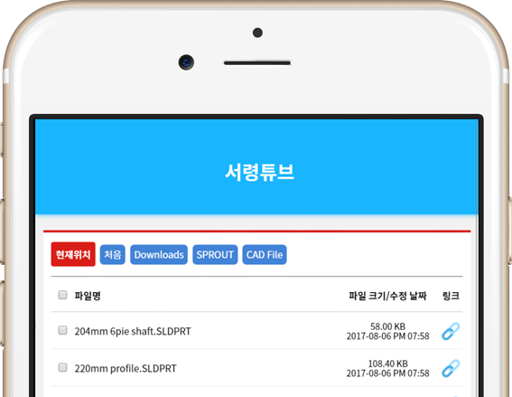
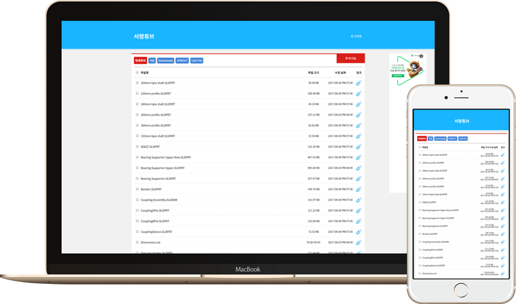
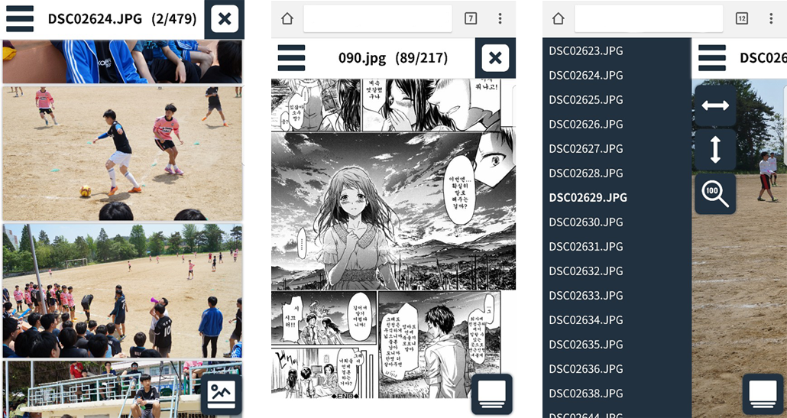
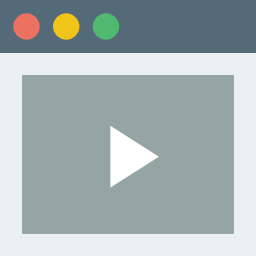

MWGA:
Make Webshare Great Again

모바일과 데스크톱 환경을 지원하며,
Responsive Design.
어떤 기기에서든지 편리하게.
모바일과 데스크톱 환경을 지원하며,
각각의 요소들이 알맞게 변화합니다.
베리즈 웹쉐어의 투박한 디자인을 모두 벗었습니다.
APP-LIKE ENVIRONMENT.
모바일 환경.
메뉴는 슬라이드 바로 바뀌어 완벽하게 감춰집니다.
마치 모바일 어플리케이션처럼 말이죠.
디스커스 댓글, 구글 애드센스도 모바일에 알맞게 변합니다.
데스크톱에서 사용하던 모든 기능을 사용할 수 있습니다.
MX 플레이어를 이용한다면 원클릭으로 영상을 스트리밍할 수 있죠.

포토 뷰어는 베리즈를 완벽하게 만들어 줍니다.
PHOTOVIEWER.
포토 뷰어는 베리즈를 완벽하게 만들어 줍니다.
대부분의 NAS들은 영상 스트리밍을 지원하지만.
이렇게 여러 사진을 다룰 수 있는 솔루션은 없습니다.
너비 맞춤, 높이 맞춤, 원본 크기 뷰 지원 / 스크롤 뷰, 만화 뷰 지원 / 텍스트 뷰 (예정)
OTHER FEATURES

LOGIN/LOGOUT, FILE UPLOAD, FILE RENAMING

ASX STREAMING
MULTIPLE VIDEO STREAMING
ZIP/RAR DOWNLOAD
MULTIPLE FILE/FOLDER COMPRESSION